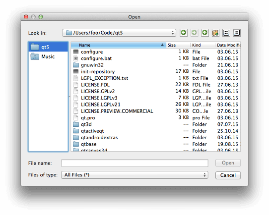

QFileDialog¶
Synopsis¶
Functions¶
- def
acceptMode() - def
confirmOverwrite() - def
defaultSuffix() - def
directory() - def
directoryUrl() - def
fileMode() - def
filter() - def
history() - def
iconProvider() - def
isNameFilterDetailsVisible() - def
isReadOnly() - def
itemDelegate() - def
labelText(label) - def
mimeTypeFilters() - def
nameFilters() - def
open(receiver, member) - def
options() - def
proxyModel() - def
resolveSymlinks() - def
restoreState(state) - def
saveState() - def
selectFile(filename) - def
selectMimeTypeFilter(filter) - def
selectNameFilter(filter) - def
selectUrl(url) - def
selectedFiles() - def
selectedMimeTypeFilter() - def
selectedNameFilter() - def
selectedUrls() - def
setAcceptMode(mode) - def
setConfirmOverwrite(enabled) - def
setDefaultSuffix(suffix) - def
setDirectory(directory) - def
setDirectory(directory) - def
setDirectoryUrl(directory) - def
setFileMode(mode) - def
setFilter(filters) - def
setHistory(paths) - def
setIconProvider(provider) - def
setItemDelegate(delegate) - def
setLabelText(label, text) - def
setMimeTypeFilters(filters) - def
setNameFilter(filter) - def
setNameFilterDetailsVisible(enabled) - def
setNameFilters(filters) - def
setOption(option[, on=true]) - def
setOptions(options) - def
setProxyModel(model) - def
setReadOnly(enabled) - def
setResolveSymlinks(enabled) - def
setSidebarUrls(urls) - def
setSupportedSchemes(schemes) - def
setViewMode(mode) - def
sidebarUrls() - def
supportedSchemes() - def
testOption(option) - def
viewMode()
Signals¶
- def
currentChanged(path) - def
currentUrlChanged(url) - def
directoryEntered(directory) - def
directoryUrlEntered(directory) - def
fileSelected(file) - def
filesSelected(files) - def
filterSelected(filter) - def
urlSelected(url) - def
urlsSelected(urls)
Static functions¶
- def
getExistingDirectory([parent=nullptr[, caption=”“[, dir=”“[, options=QFileDialog.ShowDirsOnly]]]]) - def
getExistingDirectoryUrl([parent=nullptr[, caption=”“[, dir=QUrl()[, options=QFileDialog.ShowDirsOnly[, supportedSchemes=list()]]]]]) - def
getOpenFileName([parent=nullptr[, caption=”“[, dir=”“[, filter=”“[, selectedFilter=”“[, options=QFileDialog.Options()]]]]]]) - def
getOpenFileNames([parent=nullptr[, caption=”“[, dir=”“[, filter=”“[, selectedFilter=”“[, options=QFileDialog.Options()]]]]]]) - def
getOpenFileUrl([parent=nullptr[, caption=”“[, dir=QUrl()[, filter=”“[, selectedFilter=”“[, options=QFileDialog.Options()[, supportedSchemes=list()]]]]]]]) - def
getOpenFileUrls([parent=nullptr[, caption=”“[, dir=QUrl()[, filter=”“[, selectedFilter=”“[, options=QFileDialog.Options()[, supportedSchemes=list()]]]]]]]) - def
getSaveFileName([parent=nullptr[, caption=”“[, dir=”“[, filter=”“[, selectedFilter=”“[, options=QFileDialog.Options()]]]]]]) - def
getSaveFileUrl([parent=nullptr[, caption=”“[, dir=QUrl()[, filter=”“[, selectedFilter=”“[, options=QFileDialog.Options()[, supportedSchemes=list()]]]]]]])
Detailed Description¶
The
PySide2.QtWidgets.QFileDialogclass provides a dialog that allow users to select files or directories.The
PySide2.QtWidgets.QFileDialogclass enables a user to traverse the file system in order to select one or many files or a directory.The easiest way to create a
PySide2.QtWidgets.QFileDialogis to use the static functions.fileName = QFileDialog.getOpenFileName(self, tr("Open Image"), "/home/jana", tr("Image Files (*.png *.jpg *.bmp)"))In the above example, a modal
PySide2.QtWidgets.QFileDialogis created using a static function. The dialog initially displays the contents of the “/home/jana” directory, and displays files matching the patterns given in the string “Image Files (*.png *.jpg *.bmp)”. The parent of the file dialog is set to this , and the window title is set to “Open Image”.If you want to use multiple filters, separate each one with two semicolons. For example:
"Images (*.png *.xpm *.jpg);;Text files (*.txt);;XML files (*.xml)"You can create your own
PySide2.QtWidgets.QFileDialogwithout using the static functions. By callingPySide2.QtWidgets.QFileDialog.setFileMode(), you can specify what the user must select in the dialog:dialog = QFileDialog(self) dialog.setFileMode(QFileDialog.AnyFile)In the above example, the mode of the file dialog is set to
AnyFile, meaning that the user can select any file, or even specify a file that doesn’t exist. This mode is useful for creating a “Save As” file dialog. UseExistingFileif the user must select an existing file, orDirectoryif only a directory may be selected. See theQFileDialog.FileModeenum for the complete list of modes.The
PySide2.QtWidgets.QFileDialog.fileMode()property contains the mode of operation for the dialog; this indicates what types of objects the user is expected to select. UsePySide2.QtWidgets.QFileDialog.setNameFilter()to set the dialog’s file filter. For example:dialog.setNameFilter(tr("Images (*.png *.xpm *.jpg)"))In the above example, the filter is set to
"Images (*.png *.xpm *.jpg)", this means that only files with the extensionpng,xpm, orjpgwill be shown in thePySide2.QtWidgets.QFileDialog. You can apply several filters by usingPySide2.QtWidgets.QFileDialog.setNameFilters(). UsePySide2.QtWidgets.QFileDialog.selectNameFilter()to select one of the filters you’ve given as the file dialog’s default filter.The file dialog has two view modes:
ListandDetail.Listpresents the contents of the current directory as a list of file and directory names.Detailalso displays a list of file and directory names, but provides additional information alongside each name, such as the file size and modification date. Set the mode withPySide2.QtWidgets.QFileDialog.setViewMode():dialog.setViewMode(QFileDialog.Detail)The last important function you will need to use when creating your own file dialog is
PySide2.QtWidgets.QFileDialog.selectedFiles().if dialog.exec_(): fileNames = dialog.selectedFiles()In the above example, a modal file dialog is created and shown. If the user clicked OK, the file they selected is put in
fileName.The dialog’s working directory can be set with
PySide2.QtWidgets.QFileDialog.setDirectory(). Each file in the current directory can be selected using thePySide2.QtWidgets.QFileDialog.selectFile()function.The Standard Dialogs example shows how to use
PySide2.QtWidgets.QFileDialogas well as other built-in Qt dialogs.By default, a platform-native file dialog will be used if the platform has one. In that case, the widgets which would otherwise be used to construct the dialog will not be instantiated, so related accessors such as
PySide2.QtWidgets.QWidget.layout()andPySide2.QtWidgets.QFileDialog.itemDelegate()will return null. You can set theDontUseNativeDialogoption to ensure that the widget-based implementation will be used instead of the native dialog.See also
PySide2.QtCore.QDirPySide2.QtCore.QFileInfoPySide2.QtCore.QFilePySide2.QtWidgets.QColorDialogPySide2.QtWidgets.QFontDialogStandard Dialogs Example Application Example
-
class
PySide2.QtWidgets.QFileDialog(parent, f)¶ -
class
PySide2.QtWidgets.QFileDialog([parent=nullptr[, caption=""[, directory=""[, filter=""]]]]) Parameters: - directory – unicode
- caption – unicode
- filter – unicode
- f –
PySide2.QtCore.Qt.WindowFlags - parent –
PySide2.QtWidgets.QWidget
Constructs a file dialog with the given
parentand widgetflags.Constructs a file dialog with the given
parentandcaptionthat initially displays the contents of the specifieddirectory. The contents of the directory are filtered before being shown in the dialog, using a semicolon-separated list of filters specified byfilter.
-
PySide2.QtWidgets.QFileDialog.ViewMode¶ This enum describes the view mode of the file dialog; i.e. what information about each file will be displayed.
Constant Description QFileDialog.Detail Displays an icon, a name, and details for each item in the directory. QFileDialog.List Displays only an icon and a name for each item in the directory.
-
PySide2.QtWidgets.QFileDialog.FileMode¶ This enum is used to indicate what the user may select in the file dialog; i.e. what the dialog will return if the user clicks OK.
Constant Description QFileDialog.AnyFile The name of a file, whether it exists or not. QFileDialog.ExistingFile The name of a single existing file. QFileDialog.Directory The name of a directory. Both files and directories are displayed. However, the native Windows file dialog does not support displaying files in the directory chooser. QFileDialog.ExistingFiles The names of zero or more existing files. This value is obsolete since Qt 4.5:
Constant Description QFileDialog.DirectoryOnly Use DirectoryandPySide2.QtWidgets.QFileDialog.setOption()(ShowDirsOnly, true) instead.
-
PySide2.QtWidgets.QFileDialog.AcceptMode¶ Constant Description QFileDialog.AcceptOpen QFileDialog.AcceptSave
-
PySide2.QtWidgets.QFileDialog.DialogLabel¶ Constant Description QFileDialog.LookIn QFileDialog.FileName QFileDialog.FileType QFileDialog.Accept QFileDialog.Reject
-
PySide2.QtWidgets.QFileDialog.Option¶ Constant Description QFileDialog.ShowDirsOnly Only show directories in the file dialog. By default both files and directories are shown. (Valid only in the Directoryfile mode.)QFileDialog.DontResolveSymlinks Don’t resolve symlinks in the file dialog. By default symlinks are resolved. QFileDialog.DontConfirmOverwrite Don’t ask for confirmation if an existing file is selected. By default confirmation is requested. QFileDialog.DontUseNativeDialog Don’t use the native file dialog. By default, the native file dialog is used unless you use a subclass of PySide2.QtWidgets.QFileDialogthat contains theQ_OBJECT()macro, or the platform does not have a native dialog of the type that you require.QFileDialog.ReadOnly Indicates that the model is readonly. QFileDialog.HideNameFilterDetails Indicates if the file name filter details are hidden or not. QFileDialog.DontUseSheet In previous versions of Qt, the static functions would create a sheet by default if the static function was given a parent. This is no longer supported and does nothing in Qt 4.5, The static functions will always be an application modal dialog. If you want to use sheets, use QFileDialog.open()instead.QFileDialog.DontUseCustomDirectoryIcons Always use the default directory icon. Some platforms allow the user to set a different icon. Custom icon lookup cause a big performance impact over network or removable drives. Setting this will enable the QFileIconProvider.DontUseCustomDirectoryIconsoption in the icon provider. This enum value was added in Qt 5.2.
-
PySide2.QtWidgets.QFileDialog.acceptMode()¶ Return type: PySide2.QtWidgets.QFileDialog.AcceptMode
-
PySide2.QtWidgets.QFileDialog.confirmOverwrite()¶ Return type: PySide2.QtCore.bool
-
PySide2.QtWidgets.QFileDialog.currentChanged(path)¶ Parameters: path – unicode
-
PySide2.QtWidgets.QFileDialog.currentUrlChanged(url)¶ Parameters: url – PySide2.QtCore.QUrl
-
PySide2.QtWidgets.QFileDialog.defaultSuffix()¶ Return type: unicode
-
PySide2.QtWidgets.QFileDialog.directory()¶ Return type: PySide2.QtCore.QDirReturns the directory currently being displayed in the dialog.
-
PySide2.QtWidgets.QFileDialog.directoryEntered(directory)¶ Parameters: directory – unicode
-
PySide2.QtWidgets.QFileDialog.directoryUrl()¶ Return type: PySide2.QtCore.QUrlReturns the url of the directory currently being displayed in the dialog.
-
PySide2.QtWidgets.QFileDialog.directoryUrlEntered(directory)¶ Parameters: directory – PySide2.QtCore.QUrl
-
PySide2.QtWidgets.QFileDialog.fileMode()¶ Return type: PySide2.QtWidgets.QFileDialog.FileMode
-
PySide2.QtWidgets.QFileDialog.fileSelected(file)¶ Parameters: file – unicode
-
PySide2.QtWidgets.QFileDialog.filesSelected(files)¶ Parameters: files – list of strings
-
PySide2.QtWidgets.QFileDialog.filter()¶ Return type: PySide2.QtCore.QDir.FiltersReturns the filter that is used when displaying files.
-
PySide2.QtWidgets.QFileDialog.filterSelected(filter)¶ Parameters: filter – unicode
-
static
PySide2.QtWidgets.QFileDialog.getExistingDirectory([parent=nullptr[, caption=""[, dir=""[, options=QFileDialog.ShowDirsOnly]]]])¶ Parameters: - parent –
PySide2.QtWidgets.QWidget - caption – unicode
- dir – unicode
- options –
PySide2.QtWidgets.QFileDialog.Options
Return type: unicode
This is a convenience static function that will return an existing directory selected by the user.
dir = QFileDialog.getExistingDirectory(self, tr("Open Directory"), "/home", QFileDialog.ShowDirsOnly | QFileDialog.DontResolveSymlinks)
This function creates a modal file dialog with the given
parentwidget. Ifparentis not 0, the dialog will be shown centered over the parent widget.The dialog’s working directory is set to
dir, and the caption is set tocaption. Either of these may be an empty string in which case the current directory and a default caption will be used respectively.The
optionsargument holds various options about how to run the dialog, see theQFileDialog.Optionenum for more information on the flags you can pass. To ensure a native file dialog,ShowDirsOnlymust be set.On Windows and macOS , this static function will use the native file dialog and not a
PySide2.QtWidgets.QFileDialog. However, the native Windows file dialog does not support displaying files in the directory chooser. You need to passDontUseNativeDialogto display files using aPySide2.QtWidgets.QFileDialog.On Unix/X11, the normal behavior of the file dialog is to resolve and follow symlinks. For example, if
/usr/tmpis a symlink to/var/tmp, the file dialog will change to/var/tmpafter entering/usr/tmp. IfoptionsincludesDontResolveSymlinks, the file dialog will treat symlinks as regular directories.On Windows, the dialog will spin a blocking modal event loop that will not dispatch any QTimers, and if
parentis not 0 then it will position the dialog just below the parent’s title bar.Warning
Do not delete
parentduring the execution of the dialog. If you want to do this, you should create the dialog yourself using one of thePySide2.QtWidgets.QFileDialogconstructors.- parent –
-
static
PySide2.QtWidgets.QFileDialog.getExistingDirectoryUrl([parent=nullptr[, caption=""[, dir=QUrl()[, options=QFileDialog.ShowDirsOnly[, supportedSchemes=list()]]]]])¶ Parameters: - parent –
PySide2.QtWidgets.QWidget - caption – unicode
- dir –
PySide2.QtCore.QUrl - options –
PySide2.QtWidgets.QFileDialog.Options - supportedSchemes – list of strings
Return type: This is a convenience static function that will return an existing directory selected by the user. If the user presses Cancel, it returns an empty url.
The function is used similarly to
QFileDialog.getExistingDirectory(). In particularparent,caption,dirandoptionsare used in the exact same way.The main difference with
QFileDialog.getExistingDirectory()comes from the ability offered to the user to select a remote directory. That’s why the return type and the type ofdirisPySide2.QtCore.QUrl.The
supportedSchemesargument allows to restrict the type of URLs the user will be able to select. It is a way for the application to declare the protocols it will support to fetch the file content. An empty list means that no restriction is applied (the default). Supported for local files (“file” scheme) is implicit and always enabled; it is not necessary to include it in the restriction.When possible, this static function will use the native file dialog and not a
PySide2.QtWidgets.QFileDialog. On platforms which don’t support selecting remote files, Qt will allow to select only local files.- parent –
-
static
PySide2.QtWidgets.QFileDialog.getOpenFileName([parent=nullptr[, caption=""[, dir=""[, filter=""[, selectedFilter=""[, options=QFileDialog.Options()]]]]]])¶ Parameters: - parent –
PySide2.QtWidgets.QWidget - caption – unicode
- dir – unicode
- filter – unicode
- selectedFilter – unicode
- options –
PySide2.QtWidgets.QFileDialog.Options
Return type: (fileName, selectedFilter)
This is a convenience static function that returns an existing file selected by the user. If the user presses Cancel, it returns a null string.
fileName = QFileDialog.getOpenFileName(self, tr("Open File"), "/home", tr("Images (*.png *.xpm *.jpg)"))
The function creates a modal file dialog with the given
parentwidget. Ifparentis not 0, the dialog will be shown centered over the parent widget.The file dialog’s working directory will be set to
dir. Ifdirincludes a file name, the file will be selected. Only files that match the givenfilterare shown. The filter selected is set toselectedFilter. The parametersdir,selectedFilter, andfiltermay be empty strings. If you want multiple filters, separate them with ‘;;’, for example:"Images (*.png *.xpm *.jpg);;Text files (*.txt);;XML files (*.xml)"The
optionsargument holds various options about how to run the dialog, see theQFileDialog.Optionenum for more information on the flags you can pass.The dialog’s caption is set to
caption. Ifcaptionis not specified then a default caption will be used.On Windows, and macOS , this static function will use the native file dialog and not a
PySide2.QtWidgets.QFileDialog.On Windows the dialog will spin a blocking modal event loop that will not dispatch any QTimers, and if
parentis not 0 then it will position the dialog just below the parent’s title bar.On Unix/X11, the normal behavior of the file dialog is to resolve and follow symlinks. For example, if
/usr/tmpis a symlink to/var/tmp, the file dialog will change to/var/tmpafter entering/usr/tmp. IfoptionsincludesDontResolveSymlinks, the file dialog will treat symlinks as regular directories.Warning
Do not delete
parentduring the execution of the dialog. If you want to do this, you should create the dialog yourself using one of thePySide2.QtWidgets.QFileDialogconstructors.- parent –
-
static
PySide2.QtWidgets.QFileDialog.getOpenFileNames([parent=nullptr[, caption=""[, dir=""[, filter=""[, selectedFilter=""[, options=QFileDialog.Options()]]]]]])¶ Parameters: - parent –
PySide2.QtWidgets.QWidget - caption – unicode
- dir – unicode
- filter – unicode
- selectedFilter – unicode
- options –
PySide2.QtWidgets.QFileDialog.Options
Return type: (fileNames, selectedFilter)
This is a convenience static function that will return one or more existing files selected by the user.
files = QFileDialog.getOpenFileNames(self, "Select one or more files to open", "/home", "Images (*.png *.xpm *.jpg)")
This function creates a modal file dialog with the given
parentwidget. Ifparentis not 0, the dialog will be shown centered over the parent widget.The file dialog’s working directory will be set to
dir. Ifdirincludes a file name, the file will be selected. The filter is set tofilterso that only those files which match the filter are shown. The filter selected is set toselectedFilter. The parametersdir,selectedFilterandfiltermay be empty strings. If you need multiple filters, separate them with ‘;;’, for instance:"Images (*.png *.xpm *.jpg);;Text files (*.txt);;XML files (*.xml)"The dialog’s caption is set to
caption. Ifcaptionis not specified then a default caption will be used.On Windows, and macOS , this static function will use the native file dialog and not a
PySide2.QtWidgets.QFileDialog.On Windows the dialog will spin a blocking modal event loop that will not dispatch any QTimers, and if
parentis not 0 then it will position the dialog just below the parent’s title bar.On Unix/X11, the normal behavior of the file dialog is to resolve and follow symlinks. For example, if
/usr/tmpis a symlink to/var/tmp, the file dialog will change to/var/tmpafter entering/usr/tmp. Theoptionsargument holds various options about how to run the dialog, see theQFileDialog.Optionenum for more information on the flags you can pass.Warning
Do not delete
parentduring the execution of the dialog. If you want to do this, you should create the dialog yourself using one of thePySide2.QtWidgets.QFileDialogconstructors.- parent –
-
static
PySide2.QtWidgets.QFileDialog.getOpenFileUrl([parent=nullptr[, caption=""[, dir=QUrl()[, filter=""[, selectedFilter=""[, options=QFileDialog.Options()[, supportedSchemes=list()]]]]]]])¶ Parameters: - parent –
PySide2.QtWidgets.QWidget - caption – unicode
- dir –
PySide2.QtCore.QUrl - filter – unicode
- selectedFilter – unicode
- options –
PySide2.QtWidgets.QFileDialog.Options - supportedSchemes – list of strings
Return type: (fileName, selectedFilter)
This is a convenience static function that returns an existing file selected by the user. If the user presses Cancel, it returns an empty url.
The function is used similarly to
QFileDialog.getOpenFileName(). In particularparent,caption,dir,filter,selectedFilterandoptionsare used in the exact same way.The main difference with
QFileDialog.getOpenFileName()comes from the ability offered to the user to select a remote file. That’s why the return type and the type ofdirisPySide2.QtCore.QUrl.The
supportedSchemesargument allows to restrict the type of URLs the user will be able to select. It is a way for the application to declare the protocols it will support to fetch the file content. An empty list means that no restriction is applied (the default). Supported for local files (“file” scheme) is implicit and always enabled; it is not necessary to include it in the restriction.When possible, this static function will use the native file dialog and not a
PySide2.QtWidgets.QFileDialog. On platforms which don’t support selecting remote files, Qt will allow to select only local files.- parent –
-
static
PySide2.QtWidgets.QFileDialog.getOpenFileUrls([parent=nullptr[, caption=""[, dir=QUrl()[, filter=""[, selectedFilter=""[, options=QFileDialog.Options()[, supportedSchemes=list()]]]]]]])¶ Parameters: - parent –
PySide2.QtWidgets.QWidget - caption – unicode
- dir –
PySide2.QtCore.QUrl - filter – unicode
- selectedFilter – unicode
- options –
PySide2.QtWidgets.QFileDialog.Options - supportedSchemes – list of strings
Return type: (fileName, selectedFilter)
This is a convenience static function that will return one or more existing files selected by the user. If the user presses Cancel, it returns an empty list.
The function is used similarly to
QFileDialog.getOpenFileNames(). In particularparent,caption,dir,filter,selectedFilterandoptionsare used in the exact same way.The main difference with
QFileDialog.getOpenFileNames()comes from the ability offered to the user to select remote files. That’s why the return type and the type ofdirare respectivelyQList<PySide2.QtCore.QUrl> andPySide2.QtCore.QUrl.The
supportedSchemesargument allows to restrict the type of URLs the user will be able to select. It is a way for the application to declare the protocols it will support to fetch the file content. An empty list means that no restriction is applied (the default). Supported for local files (“file” scheme) is implicit and always enabled; it is not necessary to include it in the restriction.When possible, this static function will use the native file dialog and not a
PySide2.QtWidgets.QFileDialog. On platforms which don’t support selecting remote files, Qt will allow to select only local files.- parent –
-
static
PySide2.QtWidgets.QFileDialog.getSaveFileName([parent=nullptr[, caption=""[, dir=""[, filter=""[, selectedFilter=""[, options=QFileDialog.Options()]]]]]])¶ Parameters: - parent –
PySide2.QtWidgets.QWidget - caption – unicode
- dir – unicode
- filter – unicode
- selectedFilter – unicode
- options –
PySide2.QtWidgets.QFileDialog.Options
Return type: (fileName, selectedFilter)
This is a convenience static function that will return a file name selected by the user. The file does not have to exist.
It creates a modal file dialog with the given
parentwidget. Ifparentis not 0, the dialog will be shown centered over the parent widget.fileName = QFileDialog.getSaveFileName(self, tr("Save F:xile"), "/home/jana/untitled.png", tr("Images (*.png *.xpm *.jpg)"))
The file dialog’s working directory will be set to
dir. Ifdirincludes a file name, the file will be selected. Only files that match thefilterare shown. The filter selected is set toselectedFilter. The parametersdir,selectedFilter, andfiltermay be empty strings. Multiple filters are separated with ‘;;’. For instance:"Images (*.png *.xpm *.jpg);;Text files (*.txt);;XML files (*.xml)"The
optionsargument holds various options about how to run the dialog, see theQFileDialog.Optionenum for more information on the flags you can pass.The default filter can be chosen by setting
selectedFilterto the desired value.The dialog’s caption is set to
caption. Ifcaptionis not specified, a default caption will be used.On Windows, and macOS , this static function will use the native file dialog and not a
PySide2.QtWidgets.QFileDialog.On Windows the dialog will spin a blocking modal event loop that will not dispatch any QTimers, and if
parentis not 0 then it will position the dialog just below the parent’s title bar. On macOS , with its native file dialog, the filter argument is ignored.On Unix/X11, the normal behavior of the file dialog is to resolve and follow symlinks. For example, if
/usr/tmpis a symlink to/var/tmp, the file dialog will change to/var/tmpafter entering/usr/tmp. IfoptionsincludesDontResolveSymlinksthe file dialog will treat symlinks as regular directories.Warning
Do not delete
parentduring the execution of the dialog. If you want to do this, you should create the dialog yourself using one of thePySide2.QtWidgets.QFileDialogconstructors.- parent –
-
static
PySide2.QtWidgets.QFileDialog.getSaveFileUrl([parent=nullptr[, caption=""[, dir=QUrl()[, filter=""[, selectedFilter=""[, options=QFileDialog.Options()[, supportedSchemes=list()]]]]]]])¶ Parameters: - parent –
PySide2.QtWidgets.QWidget - caption – unicode
- dir –
PySide2.QtCore.QUrl - filter – unicode
- selectedFilter – unicode
- options –
PySide2.QtWidgets.QFileDialog.Options - supportedSchemes – list of strings
Return type: (fileName, selectedFilter)
This is a convenience static function that returns a file selected by the user. The file does not have to exist. If the user presses Cancel, it returns an empty url.
The function is used similarly to
QFileDialog.getSaveFileName(). In particularparent,caption,dir,filter,selectedFilterandoptionsare used in the exact same way.The main difference with
QFileDialog.getSaveFileName()comes from the ability offered to the user to select a remote file. That’s why the return type and the type ofdirisPySide2.QtCore.QUrl.The
supportedSchemesargument allows to restrict the type of URLs the user will be able to select. It is a way for the application to declare the protocols it will support to save the file content. An empty list means that no restriction is applied (the default). Supported for local files (“file” scheme) is implicit and always enabled; it is not necessary to include it in the restriction.When possible, this static function will use the native file dialog and not a
PySide2.QtWidgets.QFileDialog. On platforms which don’t support selecting remote files, Qt will allow to select only local files.- parent –
-
PySide2.QtWidgets.QFileDialog.history()¶ Return type: list of strings Returns the browsing history of the filedialog as a list of paths.
-
PySide2.QtWidgets.QFileDialog.iconProvider()¶ Return type: PySide2.QtWidgets.QFileIconProviderReturns the icon provider used by the filedialog.
-
PySide2.QtWidgets.QFileDialog.isNameFilterDetailsVisible()¶ Return type: PySide2.QtCore.bool
-
PySide2.QtWidgets.QFileDialog.isReadOnly()¶ Return type: PySide2.QtCore.bool
-
PySide2.QtWidgets.QFileDialog.itemDelegate()¶ Return type: PySide2.QtWidgets.QAbstractItemDelegateReturns the item delegate used to render the items in the views in the filedialog.
-
PySide2.QtWidgets.QFileDialog.labelText(label)¶ Parameters: label – PySide2.QtWidgets.QFileDialog.DialogLabelReturn type: unicode Returns the text shown in the filedialog in the specified
label.
-
PySide2.QtWidgets.QFileDialog.mimeTypeFilters()¶ Return type: list of strings Returns the MIME type filters that are in operation on this file dialog.
-
PySide2.QtWidgets.QFileDialog.nameFilters()¶ Return type: list of strings Returns the file type filters that are in operation on this file dialog.
-
PySide2.QtWidgets.QFileDialog.open(receiver, member)¶ Parameters: - receiver –
PySide2.QtCore.QObject - member – str
This is an overloaded function.
This function connects one of its signals to the slot specified by
receiverandmember. The specific signal depends isPySide2.QtWidgets.QFileDialog.filesSelected()ifPySide2.QtWidgets.QFileDialog.fileMode()isExistingFilesandPySide2.QtWidgets.QFileDialog.fileSelected()ifPySide2.QtWidgets.QFileDialog.fileMode()is anything else.The signal will be disconnected from the slot when the dialog is closed.
- receiver –
-
PySide2.QtWidgets.QFileDialog.options()¶ Return type: PySide2.QtWidgets.QFileDialog.Options
-
PySide2.QtWidgets.QFileDialog.proxyModel()¶ Return type: PySide2.QtCore.QAbstractProxyModelReturns the proxy model used by the file dialog. By default no proxy is set.
-
PySide2.QtWidgets.QFileDialog.resolveSymlinks()¶ Return type: PySide2.QtCore.bool
-
PySide2.QtWidgets.QFileDialog.restoreState(state)¶ Parameters: state – PySide2.QtCore.QByteArrayReturn type: PySide2.QtCore.boolRestores the dialogs’s layout, history and current directory to the
statespecified.Typically this is used in conjunction with
PySide2.QtCore.QSettingsto restore the size from a past session.Returns
falseif there are errors
-
PySide2.QtWidgets.QFileDialog.saveState()¶ Return type: PySide2.QtCore.QByteArraySaves the state of the dialog’s layout, history and current directory.
Typically this is used in conjunction with
PySide2.QtCore.QSettingsto remember the size for a future session. A version number is stored as part of the data.
-
PySide2.QtWidgets.QFileDialog.selectFile(filename)¶ Parameters: filename – unicode Selects the given
filenamein the file dialog.
-
PySide2.QtWidgets.QFileDialog.selectMimeTypeFilter(filter)¶ Parameters: filter – unicode Sets the current MIME type
filter.
-
PySide2.QtWidgets.QFileDialog.selectNameFilter(filter)¶ Parameters: filter – unicode Sets the current file type
filter. Multiple filters can be passed infilterby separating them with semicolons or spaces.
-
PySide2.QtWidgets.QFileDialog.selectUrl(url)¶ Parameters: url – PySide2.QtCore.QUrlSelects the given
urlin the file dialog.Note
The non-native
PySide2.QtWidgets.QFileDialogsupports only local files.
-
PySide2.QtWidgets.QFileDialog.selectedFiles()¶ Return type: list of strings Returns a list of strings containing the absolute paths of the selected files in the dialog. If no files are selected, or the mode is not
ExistingFilesorExistingFile, contains the current path in the viewport.
-
PySide2.QtWidgets.QFileDialog.selectedMimeTypeFilter()¶ Return type: unicode Returns The mimetype of the file that the user selected in the file dialog.
-
PySide2.QtWidgets.QFileDialog.selectedNameFilter()¶ Return type: unicode Returns the filter that the user selected in the file dialog.
-
PySide2.QtWidgets.QFileDialog.selectedUrls()¶ Return type: Returns a list of urls containing the selected files in the dialog. If no files are selected, or the mode is not
ExistingFilesorExistingFile, contains the current path in the viewport.
-
PySide2.QtWidgets.QFileDialog.setAcceptMode(mode)¶ Parameters: mode – PySide2.QtWidgets.QFileDialog.AcceptMode
-
PySide2.QtWidgets.QFileDialog.setConfirmOverwrite(enabled)¶ Parameters: enabled – PySide2.QtCore.bool
-
PySide2.QtWidgets.QFileDialog.setDefaultSuffix(suffix)¶ Parameters: suffix – unicode
-
PySide2.QtWidgets.QFileDialog.setDirectory(directory)¶ Parameters: directory – unicode Sets the file dialog’s current
directory.Note
On iOS, if you set
directorytoQStandardPaths.standardLocations(QStandardPaths.PicturesLocation).last(), a native image picker dialog will be used for accessing the user’s photo album. The filename returned can be loaded usingPySide2.QtCore.QFileand related APIs. For this to be enabled, the Info.plist assigned to QMAKE_INFO_PLIST in the project file must contain the keyNSPhotoLibraryUsageDescription. See Info.plist documentation from Apple for more information regarding this key. This feature was added in Qt 5.5.
-
PySide2.QtWidgets.QFileDialog.setDirectory(directory) Parameters: directory – PySide2.QtCore.QDirThis is an overloaded function.
-
PySide2.QtWidgets.QFileDialog.setDirectoryUrl(directory)¶ Parameters: directory – PySide2.QtCore.QUrlSets the file dialog’s current
directoryurl.Note
The non-native
PySide2.QtWidgets.QFileDialogsupports only local files.Note
On Windows, it is possible to pass URLs representing one of the virtual folders , such as “Computer” or “Network”. This is done by passing a
PySide2.QtCore.QUrlusing the schemeclsidfollowed by the CLSID value with the curly braces removed. For example the URLclsid:374DE290-123F-4565-9164-39C4925E467Bdenotes the download location. For a complete list of possible values, see the MSDN documentation on KNOWNFOLDERID. This feature was added in Qt 5.5.
-
PySide2.QtWidgets.QFileDialog.setFileMode(mode)¶ Parameters: mode – PySide2.QtWidgets.QFileDialog.FileMode
-
PySide2.QtWidgets.QFileDialog.setFilter(filters)¶ Parameters: filters – PySide2.QtCore.QDir.FiltersSets the filter used by the model to
filters. The filter is used to specify the kind of files that should be shown.
-
PySide2.QtWidgets.QFileDialog.setHistory(paths)¶ Parameters: paths – list of strings Sets the browsing history of the filedialog to contain the given
paths.
-
PySide2.QtWidgets.QFileDialog.setIconProvider(provider)¶ Parameters: provider – PySide2.QtWidgets.QFileIconProviderSets the icon provider used by the filedialog to the specified
provider.
-
PySide2.QtWidgets.QFileDialog.setItemDelegate(delegate)¶ Parameters: delegate – PySide2.QtWidgets.QAbstractItemDelegateSets the item delegate used to render items in the views in the file dialog to the given
delegate.Warning
You should not share the same instance of a delegate between views. Doing so can cause incorrect or unintuitive editing behavior since each view connected to a given delegate may receive the
PySide2.QtWidgets.QAbstractItemDelegate.closeEditor()signal, and attempt to access, modify or close an editor that has already been closed.Note that the model used is
PySide2.QtWidgets.QFileSystemModel. It has custom item data roles, which is described by theQFileSystemModel.Rolesenum. You can use aPySide2.QtWidgets.QFileIconProviderif you only want custom icons.
-
PySide2.QtWidgets.QFileDialog.setLabelText(label, text)¶ Parameters: - label –
PySide2.QtWidgets.QFileDialog.DialogLabel - text – unicode
Sets the
textshown in the filedialog in the specifiedlabel.- label –
-
PySide2.QtWidgets.QFileDialog.setMimeTypeFilters(filters)¶ Parameters: filters – list of strings Sets the
filtersused in the file dialog, from a list of MIME types.Convenience method for
PySide2.QtWidgets.QFileDialog.setNameFilters(). UsesPySide2.QtCore.QMimeTypeto create a name filter from the glob patterns and description defined in each MIME type.Use application/octet-stream for the “All files (*)” filter, since that is the base MIME type for all files.
Calling overrides any previously set name filters, and changes the return value of
PySide2.QtWidgets.QFileDialog.nameFilters().QStringList mimeTypeFilters; mimeTypeFilters << "image/jpeg" // will show "JPEG image (*.jpeg *.jpg *.jpe) << "image/png" // will show "PNG image (*.png)" << "application/octet-stream"; // will show "All files (*)" QFileDialog dialog(this); dialog.setMimeTypeFilters(mimeTypeFilters); dialog.exec();
-
PySide2.QtWidgets.QFileDialog.setNameFilter(filter)¶ Parameters: filter – unicode Sets the filter used in the file dialog to the given
filter.If
filtercontains a pair of parentheses containing one or more filename-wildcard patterns, separated by spaces, then only the text contained in the parentheses is used as the filter. This means that these calls are all equivalent:dialog.setNameFilter("All C++ files (*.cpp *.cc *.C *.cxx *.c++)") dialog.setNameFilter("*.cpp *.cc *.C *.cxx *.c++")
-
PySide2.QtWidgets.QFileDialog.setNameFilterDetailsVisible(enabled)¶ Parameters: enabled – PySide2.QtCore.bool
-
PySide2.QtWidgets.QFileDialog.setNameFilters(filters)¶ Parameters: filters – list of strings Sets the
filtersused in the file dialog.Note that the filter *.* is not portable, because the historical assumption that the file extension determines the file type is not consistent on every operating system. It is possible to have a file with no dot in its name (for example,
Makefile). In a native Windows file dialog, *.* will match such files, while in other types of file dialogs it may not. So it is better to use * if you mean to select any file.filters = QStringList() filters << "Image files (*.png *.xpm *.jpg)" << "Text files (*.txt)" << "Any files (*)" dialog = QFileDialog(this) dialog.setNameFilters(filters) dialog.exec_()
PySide2.QtWidgets.QFileDialog.setMimeTypeFilters()has the advantage of providing all possible name filters for each file type. For example, JPEG images have three possible extensions; if your application can open such files, selecting theimage/jpegmime type as a filter will allow you to open all of them.
-
PySide2.QtWidgets.QFileDialog.setOption(option[, on=true])¶ Parameters: - option –
PySide2.QtWidgets.QFileDialog.Option - on –
PySide2.QtCore.bool
Sets the given
optionto be enabled ifonis true; otherwise, clears the givenoption.- option –
-
PySide2.QtWidgets.QFileDialog.setOptions(options)¶ Parameters: options – PySide2.QtWidgets.QFileDialog.Options
-
PySide2.QtWidgets.QFileDialog.setProxyModel(model)¶ Parameters: model – PySide2.QtCore.QAbstractProxyModelSets the model for the views to the given
proxyModel. This is useful if you want to modify the underlying model; for example, to add columns, filter data or add drives.Any existing proxy model will be removed, but not deleted. The file dialog will take ownership of the
proxyModel.
-
PySide2.QtWidgets.QFileDialog.setReadOnly(enabled)¶ Parameters: enabled – PySide2.QtCore.bool
-
PySide2.QtWidgets.QFileDialog.setResolveSymlinks(enabled)¶ Parameters: enabled – PySide2.QtCore.bool
-
PySide2.QtWidgets.QFileDialog.setSidebarUrls(urls)¶ Parameters: urls – Sets the
urlsthat are located in the sidebar.For instance:
QList<QUrl> urls; urls << QUrl::fromLocalFile("/home/gvatteka/dev/qt-45") << QUrl::fromLocalFile(QDesktopServices::storageLocation(QDesktopServices::MusicLocation)); QFileDialog dialog; dialog.setSidebarUrls(urls); dialog.setFileMode(QFileDialog::AnyFile); if(dialog.exec()) { // ... }
The file dialog will then look like this:

-
PySide2.QtWidgets.QFileDialog.setSupportedSchemes(schemes)¶ Parameters: schemes – list of strings
-
PySide2.QtWidgets.QFileDialog.setViewMode(mode)¶ Parameters: mode – PySide2.QtWidgets.QFileDialog.ViewMode
Return type: Returns a list of urls that are currently in the sidebar
-
PySide2.QtWidgets.QFileDialog.supportedSchemes()¶ Return type: list of strings
-
PySide2.QtWidgets.QFileDialog.testOption(option)¶ Parameters: option – PySide2.QtWidgets.QFileDialog.OptionReturn type: PySide2.QtCore.boolReturns
trueif the givenoptionis enabled; otherwise, returns false.
-
PySide2.QtWidgets.QFileDialog.urlSelected(url)¶ Parameters: url – PySide2.QtCore.QUrl
-
PySide2.QtWidgets.QFileDialog.urlsSelected(urls)¶ Parameters: urls –
-
PySide2.QtWidgets.QFileDialog.viewMode()¶ Return type: PySide2.QtWidgets.QFileDialog.ViewMode
© 2018 The Qt Company Ltd. Documentation contributions included herein are the copyrights of their respective owners. The documentation provided herein is licensed under the terms of the GNU Free Documentation License version 1.3 as published by the Free Software Foundation. Qt and respective logos are trademarks of The Qt Company Ltd. in Finland and/or other countries worldwide. All other trademarks are property of their respective owners.